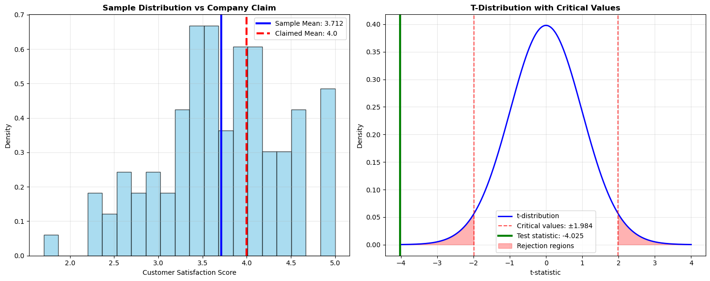
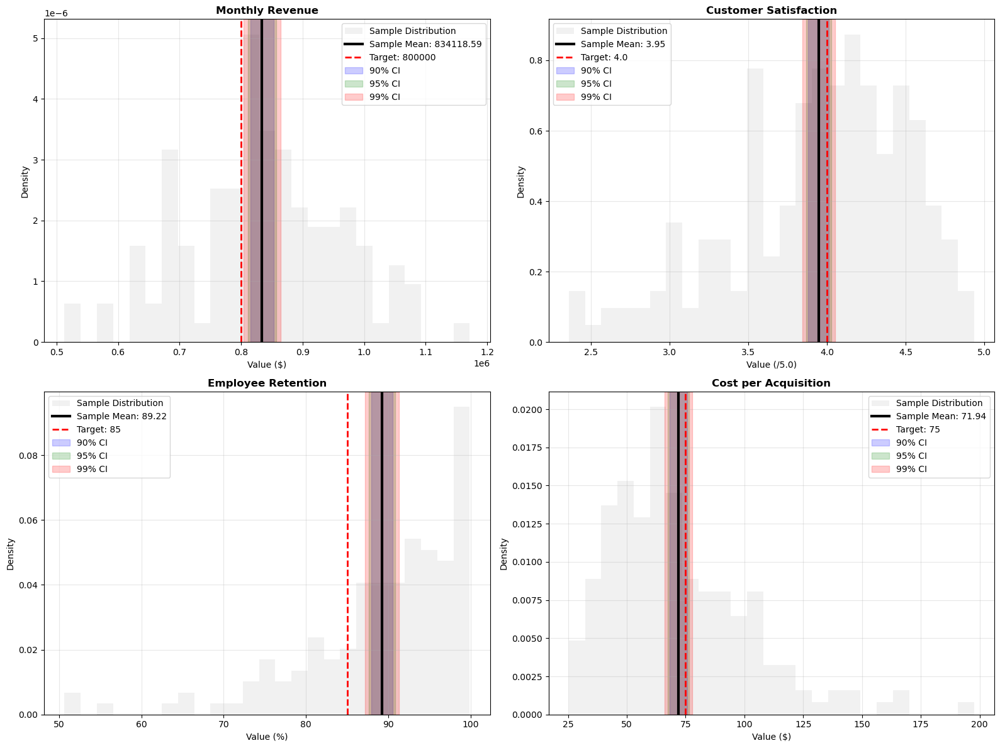

Week 10: Inferential Statistics and Hypothesis Testing
Dr. Tim Smith
April 5, 2025
Welcome to Week 10!
From Description to Decision Making
Why Inferential Statistics?
Go Beyond Samples: Make conclusions about populations
Test Business Hypotheses: Data-driven decision making
Quantify Uncertainty: Confidence intervals and p-values
Compare Groups: A/B testing and performance analysis
What We’ll Master
Hypothesis testing framework
T-tests (one-sample, two-sample, paired)
Confidence intervals
P-values and statistical significance
Business applications of statistical inference
Note
Inferential statistics turn sample insights into population-level business decisions!
Part 1: Hypothesis Testing Framework
The Logic of Statistical Testing
import pandas as pdimport numpy as npimport matplotlib.pyplot as pltimport seaborn as snsfrom scipy import statsimport warningswarnings.filterwarnings('ignore')# Set up professional plotting styleplt.style.use('default')sns.set_palette("husl")print("HYPOTHESIS TESTING FRAMEWORK")print("="*35)# Business scenario: Customer satisfaction testing# Company claims average satisfaction is 4.0/5.0# We sample 100 customers to test this claimnp.random.seed(42)# Actual population mean is 3.8 (company claim is false)customer_sample = np.random.normal(3.8, 0.8, 100)customer_sample = np.clip(customer_sample, 1, 5) # Keep in 1-5 rangeprint("Business Scenario: Customer Satisfaction Testing")print("="*50)print("Company Claim: Average satisfaction = 4.0")print("Sample Data: 100 customer responses")print(f"Sample Mean: {customer_sample.mean():.3f}")print(f"Sample Std: {customer_sample.std():.3f}")# Step 1: Set up hypothesesprint(f"\nStep 1: Formulate Hypotheses")print(" H₀ (Null): μ = 4.0 (Company claim is correct)")print(" H₁ (Alternative): μ ≠ 4.0 (Company claim is incorrect)")# Step 2: Choose significance levelalpha =0.05print(f"\nStep 2: Set Significance Level")print(f" α = {alpha} (5% risk of Type I error)")# Step 3: Calculate test statisticsample_mean = customer_sample.mean()claimed_mean =4.0sample_std = customer_sample.std()n =len(customer_sample)standard_error = sample_std / np.sqrt(n)t_statistic = (sample_mean - claimed_mean) / standard_errorprint(f"\nStep 3: Calculate Test Statistic")print(f" Sample mean: {sample_mean:.3f}")print(f" Standard error: {standard_error:.3f}")print(f" t-statistic: {t_statistic:.3f}")# Step 4: Find p-valuedegrees_freedom = n -1p_value =2* (1- stats.t.cdf(abs(t_statistic), degrees_freedom)) # Two-tailed testprint(f"\nStep 4: Calculate P-value")print(f" Degrees of freedom: {degrees_freedom}")print(f" P-value: {p_value:.4f}")# Step 5: Make decisionprint(f"\nStep 5: Make Statistical Decision")if p_value < alpha: decision ="Reject H₀" conclusion ="Evidence suggests company claim is incorrect"else: decision ="Fail to reject H₀" conclusion ="Insufficient evidence to reject company claim"print(f" Decision: {decision}")print(f" Conclusion: {conclusion}")# Visualize the hypothesis testfig, (ax1, ax2) = plt.subplots(1, 2, figsize=(15, 6))# Sample distributionax1.hist(customer_sample, bins=20, alpha=0.7, color='skyblue', edgecolor='black', density=True)ax1.axvline(sample_mean, color='blue', linestyle='-', linewidth=3, label=f'Sample Mean: {sample_mean:.3f}')ax1.axvline(claimed_mean, color='red', linestyle='--', linewidth=3, label=f'Claimed Mean: {claimed_mean}')ax1.set_title('Sample Distribution vs Company Claim', fontweight='bold')ax1.set_xlabel('Customer Satisfaction Score')ax1.set_ylabel('Density')ax1.legend()ax1.grid(True, alpha=0.3)# T-distribution with critical valuesx = np.linspace(-4, 4, 1000)y = stats.t.pdf(x, degrees_freedom)ax2.plot(x, y, 'b-', linewidth=2, label='t-distribution')# Critical values for two-tailed testcritical_value = stats.t.ppf(1- alpha/2, degrees_freedom)ax2.axvline(critical_value, color='red', linestyle='--', alpha=0.7, label=f'Critical values: ±{critical_value:.3f}')ax2.axvline(-critical_value, color='red', linestyle='--', alpha=0.7)# Show test statisticax2.axvline(t_statistic, color='green', linewidth=3, label=f'Test statistic: {t_statistic:.3f}')# Shade rejection regionsx_reject_right = x[x >= critical_value]y_reject_right = stats.t.pdf(x_reject_right, degrees_freedom)x_reject_left = x[x <=-critical_value]y_reject_left = stats.t.pdf(x_reject_left, degrees_freedom)ax2.fill_between(x_reject_right, y_reject_right, alpha=0.3, color='red', label='Rejection regions')ax2.fill_between(x_reject_left, y_reject_left, alpha=0.3, color='red')ax2.set_title('T-Distribution with Critical Values', fontweight='bold')ax2.set_xlabel('t-statistic')ax2.set_ylabel('Density')ax2.legend()ax2.grid(True, alpha=0.3)plt.tight_layout()plt.show()# Business implicationsprint(f"\nBusiness Implications:")if p_value < alpha:print(f" • Strong evidence that actual satisfaction ({sample_mean:.3f}) differs from claimed level")print(f" • Company should investigate satisfaction drivers")print(f" • Marketing claims may need adjustment")print(f" • Customer experience improvements needed")else:print(f" • No strong evidence against company satisfaction claim")print(f" • Current satisfaction levels appear consistent with 4.0 target")print(f" • Continue monitoring satisfaction trends")# Effect size (Cohen's d)cohens_d =abs(sample_mean - claimed_mean) / sample_stdprint(f"\nEffect Size Analysis:")print(f" Cohen's d: {cohens_d:.3f}")if cohens_d <0.2: effect_size ="Small"elif cohens_d <0.5: effect_size ="Small to Medium"elif cohens_d <0.8: effect_size ="Medium to Large"else: effect_size ="Large"print(f" Effect Size: {effect_size} practical difference")
HYPOTHESIS TESTING FRAMEWORK
===================================
Business Scenario: Customer Satisfaction Testing
==================================================
Company Claim: Average satisfaction = 4.0
Sample Data: 100 customer responses
Sample Mean: 3.712
Sample Std: 0.714
Step 1: Formulate Hypotheses
H₀ (Null): μ = 4.0 (Company claim is correct)
H₁ (Alternative): μ ≠ 4.0 (Company claim is incorrect)
Step 2: Set Significance Level
α = 0.05 (5% risk of Type I error)
Step 3: Calculate Test Statistic
Sample mean: 3.712
Standard error: 0.071
t-statistic: -4.025
Step 4: Calculate P-value
Degrees of freedom: 99
P-value: 0.0001
Step 5: Make Statistical Decision
Decision: Reject H₀
Conclusion: Evidence suggests company claim is incorrect
Business Implications:
• Strong evidence that actual satisfaction (3.712) differs from claimed level
• Company should investigate satisfaction drivers
• Marketing claims may need adjustment
• Customer experience improvements needed
Effect Size Analysis:
Cohen's d: 0.403
Effect Size: Small to Medium practical difference

Part 2: One-Sample T-Tests
Testing Against Business Benchmarks
print("ONE-SAMPLE T-TESTS FOR BUSINESS BENCHMARKS")print("="*50)# Business scenario: Multiple department performance testingdepartments = {'Sales': {'data': np.random.normal(105, 15, 50), 'target': 100, 'metric': 'Sales Performance Index'},'Customer_Service': {'data': np.random.normal(4.2, 0.6, 75), 'target': 4.0, 'metric': 'Service Rating'},'Production': {'data': np.random.normal(98, 12, 60), 'target': 100, 'metric': 'Quality Score'},'Marketing': {'data': np.random.normal(3.8, 0.8, 45), 'target': 4.0, 'metric': 'Campaign Effectiveness'}}# Perform one-sample t-tests for each departmentresults_df = pd.DataFrame()test_results = {}print("Department Performance vs Industry Benchmarks:")print("="*55)for dept, info in departments.items(): data = info['data'] target = info['target']# Perform one-sample t-test t_stat, p_value = stats.ttest_1samp(data, target)# Calculate confidence interval mean_val = np.mean(data) std_err = stats.sem(data) confidence_interval = stats.t.interval(0.95, len(data)-1, loc=mean_val, scale=std_err)# Effect size effect_size =abs(mean_val - target) / np.std(data)# Store results test_results[dept] = {'Sample_Size': len(data),'Sample_Mean': mean_val,'Target': target,'T_Statistic': t_stat,'P_Value': p_value,'CI_Lower': confidence_interval[0],'CI_Upper': confidence_interval[1],'Effect_Size': effect_size,'Significant': p_value <0.05 }# Business interpretationprint(f"\n{dept} Department ({info['metric']}):")print(f" Sample Mean: {mean_val:.3f} (n={len(data)})")print(f" Industry Target: {target}")print(f" t-statistic: {t_stat:.3f}")print(f" p-value: {p_value:.4f}")print(f" 95% Confidence Interval: [{confidence_interval[0]:.3f}, {confidence_interval[1]:.3f}]")if p_value <0.05:if mean_val > target:print(f" ✓ EXCEEDS target (statistically significant)")else:print(f" ⚠ BELOW target (statistically significant)")else:print(f" ➤ No significant difference from target")# Create comprehensive visualizationfig, axes = plt.subplots(2, 2, figsize=(16, 12))axes = axes.flatten()for i, (dept, info) inenumerate(departments.items()): ax = axes[i] data = info['data'] target = info['target'] result = test_results[dept]# Histogram of sample data ax.hist(data, bins=15, alpha=0.7, color='lightblue', edgecolor='black', density=True)# Sample mean ax.axvline(result['Sample_Mean'], color='blue', linewidth=3, label=f'Sample Mean: {result["Sample_Mean"]:.3f}')# Target line ax.axvline(target, color='red', linestyle='--', linewidth=3, label=f'Target: {target}')# Confidence interval ax.axvspan(result['CI_Lower'], result['CI_Upper'], alpha=0.2, color='green', label='95% Confidence Interval')# Formatting significance_marker ="***"if result['P_Value'] <0.001else"**"if result['P_Value'] <0.01else"*"if result['P_Value'] <0.05else"ns" ax.set_title(f'{dept} Performance\np-value: {result["P_Value"]:.4f}{significance_marker}', fontweight='bold') ax.set_xlabel(info['metric']) ax.set_ylabel('Density') ax.legend() ax.grid(True, alpha=0.3)plt.tight_layout()plt.suptitle('Department Performance vs Industry Benchmarks', fontsize=16, fontweight='bold', y=1.02)plt.show()# Summary analysisresults_summary = pd.DataFrame(test_results).Tresults_summary = results_summary.round(3)print(f"\nSUMMARY TABLE:")print("="*20)print(results_summary[['Sample_Mean', 'Target', 'P_Value', 'Significant', 'Effect_Size']])# Business recommendationsprint(f"\nBUSINESS RECOMMENDATIONS:")print("="*30)exceeds_target = [dept for dept, result in test_results.items() if result['Significant'] and result['Sample_Mean'] > result['Target']]below_target = [dept for dept, result in test_results.items() if result['Significant'] and result['Sample_Mean'] < result['Target']]meets_target = [dept for dept, result in test_results.items() ifnot result['Significant']]if exceeds_target:print(f"Departments EXCEEDING targets: {', '.join(exceeds_target)}")print(" → Document best practices for company-wide implementation")if below_target:print(f"Departments BELOW targets: {', '.join(below_target)}")print(" → Immediate performance improvement plans needed")if meets_target:print(f"Departments MEETING targets: {', '.join(meets_target)}")print(" → Continue current strategies, monitor for changes")# Calculate overall company performanceall_significant =sum(1for result in test_results.values() if result['Significant'])total_departments =len(test_results)print(f"\nOVERALL ASSESSMENT:")print(f" Departments with significant differences: {all_significant}/{total_departments}")print(f" Company performance variability: {'High'if all_significant > total_departments/2else'Moderate'if all_significant >0else'Low'}")
ONE-SAMPLE T-TESTS FOR BUSINESS BENCHMARKS
==================================================
Department Performance vs Industry Benchmarks:
=======================================================
Sales Department (Sales Performance Index):
Sample Mean: 104.411 (n=50)
Industry Target: 100
t-statistic: 2.048
p-value: 0.0460
95% Confidence Interval: [100.082, 108.739]
✓ EXCEEDS target (statistically significant)
Customer_Service Department (Service Rating):
Sample Mean: 4.294 (n=75)
Industry Target: 4.0
t-statistic: 4.199
p-value: 0.0001
95% Confidence Interval: [4.154, 4.433]
✓ EXCEEDS target (statistically significant)
Production Department (Quality Score):
Sample Mean: 97.789 (n=60)
Industry Target: 100
t-statistic: -1.306
p-value: 0.1966
95% Confidence Interval: [94.403, 101.176]
➤ No significant difference from target
Marketing Department (Campaign Effectiveness):
Sample Mean: 3.951 (n=45)
Industry Target: 4.0
t-statistic: -0.530
p-value: 0.5989
95% Confidence Interval: [3.763, 4.138]
➤ No significant difference from target
SUMMARY TABLE:
====================
Sample_Mean Target P_Value Significant Effect_Size
Sales 104.410686 100 0.045974 True 0.292522
Customer_Service 4.293782 4.0 0.000074 True 0.488148
Production 97.789265 100 0.196561 False 0.17005
Marketing 3.95061 4.0 0.59887 False 0.07988
BUSINESS RECOMMENDATIONS:
==============================
Departments EXCEEDING targets: Sales, Customer_Service
→ Document best practices for company-wide implementation
Departments MEETING targets: Production, Marketing
→ Continue current strategies, monitor for changes
OVERALL ASSESSMENT:
Departments with significant differences: 2/4
Company performance variability: Moderate
print("CONFIDENCE INTERVALS FOR BUSINESS DECISION MAKING")print("="*55)# Business metrics with confidence intervalsbusiness_metrics = {'Monthly Revenue': {'data': np.random.normal(850000, 125000, 120),'target': 800000,'unit': '$','context': 'Revenue target achievement' },'Customer Satisfaction': {'data': np.random.beta(8, 2, 200) *5,'target': 4.0,'unit': '/5.0','context': 'Service quality benchmark' },'Employee Retention': {'data': np.random.beta(9, 1, 150) *100,'target': 85,'unit': '%','context': 'Industry retention standard' },'Cost per Acquisition': {'data': np.random.lognormal(4.2, 0.4, 180),'target': 75,'unit': '$','context': 'Marketing efficiency target' }}# Clean data for realistic business valuesbusiness_metrics['Monthly Revenue']['data'] = np.abs(business_metrics['Monthly Revenue']['data'])business_metrics['Customer Satisfaction']['data'] = np.clip(business_metrics['Customer Satisfaction']['data'], 1, 5)business_metrics['Employee Retention']['data'] = np.clip(business_metrics['Employee Retention']['data'], 0, 100)business_metrics['Cost per Acquisition']['data'] = np.clip(business_metrics['Cost per Acquisition']['data'], 10, 200)# Calculate confidence intervalsconfidence_results = {}confidence_levels = [0.90, 0.95, 0.99]print("CONFIDENCE INTERVAL ANALYSIS:")print("="*35)for metric_name, metric_info in business_metrics.items(): data = metric_info['data'] target = metric_info['target']print(f"\n{metric_name.upper()} ({metric_info['context']}):")print("-"* (len(metric_name) +20))# Basic statistics sample_mean = np.mean(data) sample_std = np.std(data, ddof=1) # Sample standard deviation sample_size =len(data) standard_error = sample_std / np.sqrt(sample_size)print(f"Sample Statistics:")print(f" Mean: {sample_mean:.2f}{metric_info['unit']}")print(f" Standard Deviation: {sample_std:.2f}")print(f" Sample Size: {sample_size}")print(f" Standard Error: {standard_error:.2f}")print(f" Target: {target}{metric_info['unit']}")# Calculate confidence intervals at different levels intervals = {}for conf_level in confidence_levels: alpha =1- conf_level df = sample_size -1 t_critical = stats.t.ppf(1- alpha/2, df) margin_error = t_critical * standard_error ci_lower = sample_mean - margin_error ci_upper = sample_mean + margin_error intervals[conf_level] = {'lower': ci_lower,'upper': ci_upper,'margin_error': margin_error,'t_critical': t_critical }# Check if target is in confidence interval target_in_ci = ci_lower <= target <= ci_upperprint(f"\n{conf_level*100:.0f}% Confidence Interval:")print(f" [{ci_lower:.2f}, {ci_upper:.2f}]{metric_info['unit']}")print(f" Margin of Error: ±{margin_error:.2f}")print(f" Target in CI: {'Yes'if target_in_ci else'No'}")ifnot target_in_ci:if sample_mean > target:print(f" → Significantly ABOVE target")else:print(f" → Significantly BELOW target") confidence_results[metric_name] = {'sample_mean': sample_mean,'standard_error': standard_error,'sample_size': sample_size,'target': target,'intervals': intervals }# Create visualizationfig, axes = plt.subplots(2, 2, figsize=(16, 12))axes = axes.flatten()metric_names =list(business_metrics.keys())colors = ['blue', 'green', 'red']for i, metric_name inenumerate(metric_names): ax = axes[i] result = confidence_results[metric_name] data = business_metrics[metric_name]['data']# Plot sample distribution ax.hist(data, bins=25, alpha=0.3, color='lightgray', density=True, label='Sample Distribution')# Sample mean ax.axvline(result['sample_mean'], color='black', linewidth=3, label=f'Sample Mean: {result["sample_mean"]:.2f}')# Target line ax.axvline(result['target'], color='red', linestyle='--', linewidth=2, label=f'Target: {result["target"]}')# Confidence intervalsfor j, conf_level inenumerate(confidence_levels): interval = result['intervals'][conf_level] color = colors[j] ax.axvspan(interval['lower'], interval['upper'], alpha=0.2, color=color, label=f'{conf_level*100:.0f}% CI') ax.set_title(f'{metric_name}', fontweight='bold') ax.set_xlabel(f'Value ({business_metrics[metric_name]["unit"]})') ax.set_ylabel('Density') ax.legend() ax.grid(True, alpha=0.3)plt.tight_layout()plt.show()# Decision making frameworkprint(f"\nBUSINESS DECISION FRAMEWORK:")print("="*35)for metric_name, result in confidence_results.items():print(f"\n{metric_name}:")# Check 95% confidence interval ci_95 = result['intervals'][0.95] target = result['target'] mean = result['sample_mean']if ci_95['lower'] > target: decision ="EXCEED target with high confidence" action ="Maintain current strategy, possibly raise targets"elif ci_95['upper'] < target: decision ="BELOW target with high confidence" action ="Immediate improvement actions required"elif mean > target: decision ="Likely above target, but uncertain" action ="Monitor closely, consider improvements"elif mean < target: decision ="Likely below target, but uncertain" action ="Investigate causes, implement improvements"else: decision ="On target, within expected variation" action ="Continue current approach"print(f" Decision: {decision}")print(f" Recommended Action: {action}")# Precision analysisprint(f"\nPRECISION ANALYSIS:")print("="*20)print("Margin of Error (95% CI) by Metric:")for metric_name, result in confidence_results.items(): margin_error = result['intervals'][0.95]['margin_error'] relative_margin = (margin_error /abs(result['sample_mean'])) *100 precision_rating = ("High"if relative_margin <5else"Medium"if relative_margin <10else"Low")print(f" {metric_name}: ±{margin_error:.2f} ({relative_margin:.1f}% of mean) - {precision_rating} precision")# Sample size recommendationsprint(f"\nSAMPLE SIZE RECOMMENDATIONS:")print("="*35)for metric_name, result in confidence_results.items(): current_margin = result['intervals'][0.95]['margin_error'] desired_margin = current_margin *0.5# 50% reduction in margin of error# Required sample size for desired precision current_n = result['sample_size'] required_n =int((current_margin / desired_margin) **2* current_n) additional_n = required_n - current_nif additional_n >0:print(f" {metric_name}: Collect {additional_n:,} more samples to halve margin of error")else:print(f" {metric_name}: Current sample size is adequate")
CONFIDENCE INTERVALS FOR BUSINESS DECISION MAKING
=======================================================
CONFIDENCE INTERVAL ANALYSIS:
===================================
MONTHLY REVENUE (Revenue target achievement):
-----------------------------------
Sample Statistics:
Mean: 834118.59$
Standard Deviation: 126629.08
Sample Size: 120
Standard Error: 11559.60
Target: 800000$
90% Confidence Interval:
[814955.56, 853281.62]$
Margin of Error: ±19163.03
Target in CI: No
→ Significantly ABOVE target
95% Confidence Interval:
[811229.43, 857007.75]$
Margin of Error: ±22889.16
Target in CI: No
→ Significantly ABOVE target
99% Confidence Interval:
[803858.15, 864379.03]$
Margin of Error: ±30260.44
Target in CI: No
→ Significantly ABOVE target
CUSTOMER SATISFACTION (Service quality benchmark):
-----------------------------------------
Sample Statistics:
Mean: 3.95/5.0
Standard Deviation: 0.56
Sample Size: 200
Standard Error: 0.04
Target: 4.0/5.0
90% Confidence Interval:
[3.88, 4.01]/5.0
Margin of Error: ±0.07
Target in CI: Yes
95% Confidence Interval:
[3.87, 4.02]/5.0
Margin of Error: ±0.08
Target in CI: Yes
99% Confidence Interval:
[3.84, 4.05]/5.0
Margin of Error: ±0.10
Target in CI: Yes
EMPLOYEE RETENTION (Industry retention standard):
--------------------------------------
Sample Statistics:
Mean: 89.22%
Standard Deviation: 9.76
Sample Size: 150
Standard Error: 0.80
Target: 85%
90% Confidence Interval:
[87.90, 90.54]%
Margin of Error: ±1.32
Target in CI: No
→ Significantly ABOVE target
95% Confidence Interval:
[87.65, 90.80]%
Margin of Error: ±1.58
Target in CI: No
→ Significantly ABOVE target
99% Confidence Interval:
[87.14, 91.30]%
Margin of Error: ±2.08
Target in CI: No
→ Significantly ABOVE target
COST PER ACQUISITION (Marketing efficiency target):
----------------------------------------
Sample Statistics:
Mean: 71.94$
Standard Deviation: 30.39
Sample Size: 180
Standard Error: 2.26
Target: 75$
90% Confidence Interval:
[68.19, 75.68]$
Margin of Error: ±3.74
Target in CI: Yes
95% Confidence Interval:
[67.47, 76.41]$
Margin of Error: ±4.47
Target in CI: Yes
99% Confidence Interval:
[66.04, 77.83]$
Margin of Error: ±5.90
Target in CI: Yes
BUSINESS DECISION FRAMEWORK:
===================================
Monthly Revenue:
Decision: EXCEED target with high confidence
Recommended Action: Maintain current strategy, possibly raise targets
Customer Satisfaction:
Decision: Likely below target, but uncertain
Recommended Action: Investigate causes, implement improvements
Employee Retention:
Decision: EXCEED target with high confidence
Recommended Action: Maintain current strategy, possibly raise targets
Cost per Acquisition:
Decision: Likely below target, but uncertain
Recommended Action: Investigate causes, implement improvements
PRECISION ANALYSIS:
====================
Margin of Error (95% CI) by Metric:
Monthly Revenue: ±22889.16 (2.7% of mean) - High precision
Customer Satisfaction: ±0.08 (2.0% of mean) - High precision
Employee Retention: ±1.58 (1.8% of mean) - High precision
Cost per Acquisition: ±4.47 (6.2% of mean) - Medium precision
SAMPLE SIZE RECOMMENDATIONS:
===================================
Monthly Revenue: Collect 360 more samples to halve margin of error
Customer Satisfaction: Collect 600 more samples to halve margin of error
Employee Retention: Collect 450 more samples to halve margin of error
Cost per Acquisition: Collect 540 more samples to halve margin of error

Key Takeaways
What You’ve Mastered This Week
Hypothesis Testing: Systematic framework for business decision making
One-Sample T-Tests: Compare sample performance to benchmarks
Two-Sample T-Tests: Compare groups for A/B testing and performance analysis
Confidence Intervals: Quantify uncertainty in business estimates
P-Values: Understand statistical significance in business context